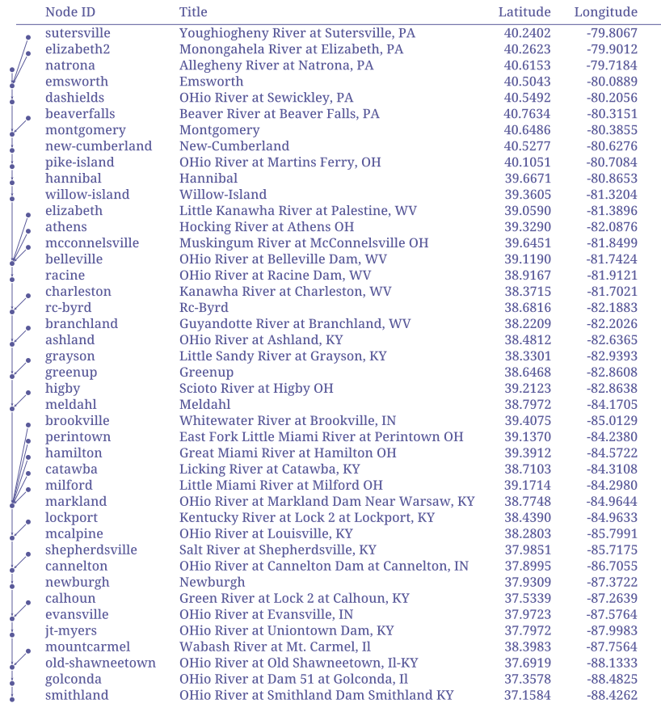

Making Tables
network load_file("./data/ohio.network")
node load_attrs("./data/attrs/{_NAME}.toml")
network clip()
# ^Ind => =(+ (st+num 'INDEX) 1)
<Node ID => {_NAME}
<Title => {_description:case(title):repl(Ky,KY):repl(In,IN):repl(Wv,WV):repl(Oh,OH)?}
>Latitude => {lat:f(4)}
>Longitude => {lon:f(4)}
Results:
| Node ID | Title | Latitude | Longitude |
|---|---|---|---|
| smithland | OHio River at Smithland Dam Smithland KY | 37.1584 | -88.4262 |
| golconda | OHio River at Dam 51 at Golconda, Il | 37.3578 | -88.4825 |
| old-shawneetown | OHio River at Old Shawneetown, Il-KY | 37.6919 | -88.1333 |
| mountcarmel | Wabash River at Mt. Carmel, Il | 38.3983 | -87.7564 |
| jt-myers | OHio River at Uniontown Dam, KY | 37.7972 | -87.9983 |
| evansville | OHio River at Evansville, IN | 37.9723 | -87.5764 |
| calhoun | Green River at Lock 2 at Calhoun, KY | 37.5339 | -87.2639 |
| newburgh | Newburgh | 37.9309 | -87.3722 |
| cannelton | OHio River at Cannelton Dam at Cannelton, IN | 37.8995 | -86.7055 |
| shepherdsville | Salt River at Shepherdsville, KY | 37.9851 | -85.7175 |
| mcalpine | OHio River at Louisville, KY | 38.2803 | -85.7991 |
| lockport | Kentucky River at Lock 2 at Lockport, KY | 38.4390 | -84.9633 |
| markland | OHio River at Markland Dam Near Warsaw, KY | 38.7748 | -84.9644 |
| milford | Little Miami River at Milford OH | 39.1714 | -84.2980 |
| catawba | Licking River at Catawba, KY | 38.7103 | -84.3108 |
| hamilton | Great Miami River at Hamilton OH | 39.3912 | -84.5722 |
| perintown | East Fork Little Miami River at Perintown OH | 39.1370 | -84.2380 |
| brookville | Whitewater River at Brookville, IN | 39.4075 | -85.0129 |
| meldahl | Meldahl | 38.7972 | -84.1705 |
| higby | Scioto River at Higby OH | 39.2123 | -82.8638 |
| greenup | Greenup | 38.6468 | -82.8608 |
| grayson | Little Sandy River at Grayson, KY | 38.3301 | -82.9393 |
| ashland | OHio River at Ashland, KY | 38.4812 | -82.6365 |
| branchland | Guyandotte River at Branchland, WV | 38.2209 | -82.2026 |
| rc-byrd | Rc-Byrd | 38.6816 | -82.1883 |
| charleston | Kanawha River at Charleston, WV | 38.3715 | -81.7021 |
| racine | OHio River at Racine Dam, WV | 38.9167 | -81.9121 |
| belleville | OHio River at Belleville Dam, WV | 39.1190 | -81.7424 |
| mcconnelsville | Muskingum River at McConnelsville OH | 39.6451 | -81.8499 |
| athens | Hocking River at Athens OH | 39.3290 | -82.0876 |
| elizabeth | Little Kanawha River at Palestine, WV | 39.0590 | -81.3896 |
| willow-island | Willow-Island | 39.3605 | -81.3204 |
| hannibal | Hannibal | 39.6671 | -80.8653 |
| pike-island | OHio River at Martins Ferry, OH | 40.1051 | -80.7084 |
| new-cumberland | New-Cumberland | 40.5277 | -80.6276 |
| montgomery | Montgomery | 40.6486 | -80.3855 |
| beaverfalls | Beaver River at Beaver Falls, PA | 40.7634 | -80.3151 |
| dashields | OHio River at Sewickley, PA | 40.5492 | -80.2056 |
| emsworth | Emsworth | 40.5043 | -80.0889 |
| natrona | Allegheny River at Natrona, PA | 40.6153 | -79.7184 |
| elizabeth2 | Monongahela River at Elizabeth, PA | 40.2623 | -79.9012 |
| sutersville | Youghiogheny River at Sutersville, PA | 40.2402 | -79.8067 |
Nadi style table with network information:
network load_file("./data/ohio.network")
node load_attrs("./data/attrs/{_NAME}.toml")
network clip()
network echo("../output/ohio-table.svg")
# ^Ind => =(+ (st+num 'INDEX) 1)
<Node ID => {_NAME}
<Title => {_description:case(title):repl(Ky,KY):repl(In,IN):repl(Wv,WV):repl(Oh,OH)?}
>Latitude => {lat:f(4)}
>Longitude => {lon:f(4)}
Results:
